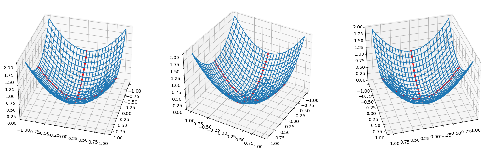

week02-01--multivariable-optimization
George McNinch Math 87 - Spring 2024
§ Multi-variable Optimization
Optimization with functions of several variables
Consider a function \(f(x,y)\) of two variables. You learned in Calculus 3 (vector calculus) how to search for the points \((x,y)\) in the plane \(ℝ²\) at which \(f\) assumes its maximum and minimum value. Let’s briefly recap this story.
Recall that for a function of a single variable, critical points are those points for which the tangent line is horizontal. In the single variable case, the criteria depends instead on the tangent plane.
Recall that the surface defined by \(z = f(x,y)\) can be parameterized by \(\mathbf{r}(x,y) = (x,y,f(x,y))\). So a normal vector to this surface at a point \(P = (x_0,y_0,f(x_0,y_0))\) on the surface is given by the cross product \[\left (\dfrac{\partial \mathbf{r}}{\partial x} \times \dfrac{\partial \mathbf{r}}{\partial y}\right)_P.\]
Alternatively, consider \(F(x,y,z) = z-f(x,y)\) so that the surface is defined by \(F = 0\). Then the gradient \(\nabla F\) defines a normal vector at each point \(P\), where \[(\nabla F)_P = \left(\dfrac{\partial F}{\partial x} \mathbf{i} + \dfrac{\partial F}{\partial y} \mathbf{j} + \dfrac{\partial F}{\partial z} \mathbf{k}\right)_P\].
There is a nice discussion here: normal vector. Both points of view can be useful, but here they lead to the same formula. At the point \(P=(x_0,y_0,f(x_0,y_0))\) one has a normal to the surface defined by \(z = f(x,y)\) given by \[\mathbf{n}\vert_P = \left ( \mathbf{i} + \dfrac{\partial f}{\partial x} \mathbf{k} \right )_P \times \left ( \mathbf{j} + \dfrac{\partial f}{\partial y} \mathbf{k} \right )_P = \left ( \mathbf{k} - \dfrac{\partial f}{\partial x} \mathbf{i} - \dfrac{\partial f}{\partial y} \mathbf{j} \right )_P\]
Now, the tangent plane at \(P\) to the surface \(z = f(x,y)\) is just the plane orthogonal to this normal vector \(\mathbf{n}_P\). Thus, the tangent plane at \(P\) is horizontal – parallel to the \(x,y\)-plan – just in case this normal vector points in the \(\mathbf{k}\) direction – i.e. provided that \[(\clubsuit) \quad \dfrac{\partial{f}}{\partial{x}} \bigg\vert_{(x_0,y_0)} = 0 \quad \text{and} \quad \dfrac{\partial{f}}{\partial{y}} \bigg\vert_{(x_0,y_0)} = 0\]
Mimicking the one variable case, we say that the points \((x_0,y_0)\) for which the tangent plane to the surface \(P=(x_0,y_0,f(x_0,y_0))\) is horizontal are the critical points.
So we find the critical points by simultaneously solving the equations \((\clubsuit)\).
There is a second derivative test which gives information about the “max/min status” of these critical points.
To use this test, consider the matrix of second partial derivatives
\[M(x_0,y_0) = \begin{pmatrix} \dfrac{\partial^2 f}{\partial x^2} & \dfrac{\partial^2 f}{\partial x \partial y} \\ \dfrac{\partial^2 f}{\partial y \partial x} & \dfrac{\partial^2 f}{\partial y^2} \end{pmatrix} \Bigg\vert_{(x_0,y_0)}.\]
For reasonable functions, the “mixed partials” \(\dfrac{\partial^2 f}{\partial x \partial y}\) and \(\dfrac{\partial^2 f}{\partial y \partial x}\) coincide.
Remember that the determinant of a \(2 \times 2\) matrix \(\begin{pmatrix} a & b \\ c & d \end{pmatrix}\) is \(ad - bc\).
So, provided that \(f\) is a reasonable function, the determinant of \(M\) is given by the expression
\[D=D(x_0,y_0) = \left(\dfrac{\partial^2 f}{\partial x^2}\cdot\dfrac{\partial^2 f}{\partial y^2} - \left[\dfrac{\partial^2 f}{\partial x \partial y}\right]^2\right) \bigg\vert_{(x_0,y_0)} \]
Suppose that \((x_0,y_0)\) is a critical point. Here is what the second derivative test tells us:
- If \(D>0\) and \(\dfrac{\partial^2 f}{\partial x^2}\bigg\vert_{(x_0,y_0)}<0\), then \(f(x,y)\) has a relative maximum at \((x_0,y_0)\).
- If \(D>0\) and \(\dfrac{\partial^2 f}{\partial x^2}\bigg\vert_{(x_0,y_0)}>0\), then \(f(x,y)\) has a relative minimum at \((x_0,y_0)\).
- If \(D<0\), then \(f(x,y)\) has a saddle point at \((x_0,y_0)\).
- If \(D=0\), the second derivative test is inconclusive.
import matplotlib.pyplot as plt
import numpy as np
# https://matplotlib.org/mpl_toolkits/mplot3d/tutorial.html
# https://matplotlib.org/3.3.1/gallery/mplot3d/surface3d.html
def draw_graph(f,x,y,x0,y0,elev_azim=[]):
X,Y = np.meshgrid(x,y)
fig = plt.figure(figsize=(20,20))
for idx,(e,a) in enumerate(elev_azim,start=1):
ax = fig.add_subplot(1,len(elev_azim),idx,projection='3d',elev=e,azim=a)
ax.plot_wireframe(X,Y,f(X,Y))
ax.plot(x,y0*np.ones(y.shape), zs= f(x,y0), color="red", linewidth=3)
ax.plot(x0*np.ones(x.shape),y, zs= f(x0,y), color="red", linewidth=3)
return figdef f(x,y):
return x**2 + y**2
af=draw_graph(f,
x=np.linspace(-1,1,25),
y=np.linspace(-1,1,25),
x0=0,
y0=0,
elev_azim=[(35,15),(35,30),(35,75)])
<Figure size 2000x2000 with 3 Axes>Example: Television manufacturer
Consider a television manufacturer which sells two models of TVs: a 19” set and a 21” set.
Their annual production costs are \$ 195 per TV for the 19” model and \$ 225 per TV for the 21” model, plus \$ 400,000 per year in fixed costs.
They expect to sell their production to a single wholesaler who will pay a base price of \$ 339 per 19” TV and $ 399 per 21” TV. The wholesaler receives a volume discount calculated as 1¢ per 19” TV + 0.3¢ per 21” TV for the 19” models and 1¢ per 21” TV + 0.4¢ per 19” TV for the 21” models.
How many 19” and 21” TVs should be produced to maximize the profits?
Let’s go through our modeling procedure. Let’s set up the problem and ask the right questions.
What are our variables?
- \(s\) = # of 19” TVs produced
- \(t\) = # of 21” TVs produced
- \(p\) = selling price of each 19” TV
- \(q\) = selling price of each 21” TV
- \(C\) = cost of production
- \(R\) = total revenue of sales
- \(P\) = total profit
What do we know to start with??
- \(p(s,t) = 339 − 0.01s − 0.003t\) dollars
- \(q(s,t) = 399 − 0.004s − 0.01t\) dollars
- \(R(s,t) = ps + qt = 339s − 0.01s^2 − 0.003st + 399t − 0.004st − 0.01t^2\)
so that
\[R(s,t) = 339s + 399t − 0.01s^2 − 0.01t^2 − 0.007st \quad \text{dollars}.\]
- \(C(s,t) = 400, 000 + 195s + 225t\) dollars
- \(P(s,t) = R(s,t) - C(s,t)\) so that \[P(s,t) = −400, 000 + 144s + 174t − 0.01s^2 − 0.01t^2 − 0.007st \quad \text{dollars}.\]
Of course, our goal is to maximize profit – i.e. to find \((s_0,t_0)\) for which \(P(s_0,t_0)\) is at a maximum.
According to the discussion above, we should compute the partial derivitives of \(P\) and simultaneously solve the equations \[0 = \dfrac{\partial P}{\partial s} = \dfrac{\partial P}{\partial t}\]
So we need to solve the equations:
\[\dfrac{\partial P}{\partial s} = 144 − 0.02s − 0.007t = 0\]
\[\dfrac{\partial P}{\partial t} = 174 − 0.02t − 0.007s = 0\]
This amounts to solving the matrix equation
\[\begin{bmatrix} 0.02 & 0.007 \\ 0.007 & 0.02 \end{bmatrix} \begin{bmatrix} s \\ t \end{bmatrix} = \begin{bmatrix} 144 \\ 174 \end{bmatrix}\]
which we can solve using row reduction on the corresponding augmented matrix:
\[\left[\begin{array}{rr|r} 0.02 & 0.007 & 144 \\ 0.007 & 0.02 & 174 \end{array} \right] \sim \left[\begin{array}{rr|r} 1 & .35 & 7200 \\ 1 & 2.857 & 24857.14 \end{array} \right] \sim \left[\begin{array}{rr|r} 1 & .35 & 7200 \\ 0 & 2.507 & 17657.14 \end{array} \right] \sim \left[\begin{array}{rr|r} 1 & .35 & 7200 \\ 0 & 1 & 7043.135 \end{array} \right] \sim \left[\begin{array}{rr|r} 1 & 0 & 4734.9 \\ 0 & 1 & 7043.135 \end{array} \right]\]
We find that the function \(P\) has exactly one critical point which occurs at \((s_0,t_0) = (4735,7043)\).
Let’s quickly pause and see how to solve this matrix equation using the computer:
A= np.array([[.02,.007],[.007,.02]])
b=np.array([144,174])
np.linalg.solve(A,b)The matrix of second derivatives is \[ \begin{bmatrix} \dfrac{\partial^2 P}{\partial s^2} & \dfrac{\partial^2 P}{\partial s \partial t} \\ \dfrac{\partial^2 P}{\partial s^2} & \dfrac{\partial^2 P}{\partial s \partial t} \end{bmatrix} = \begin{bmatrix} -0.02 & -0.007 \\ -0.007 & -0.02 \end{bmatrix}\] which has determinant \((0.02)^2 - (.007)^2 > 0\).
Since \(\dfrac{\partial^2 P}{\partial s^2} = -0.02 < 0\), the second derivative test shows that \(P\) has is local maximum at \((s_0,t_0)\), and we conclude that profit is maximized there.
(Technically, we should check for minima “on the boundary” but in this case that would be the point \((0,0)\) which clearly doesn’t maximize \(P\)).
Let’s produce a (or a few…) graph(s) to confirm our work:
s = np.linspace(2000,8000,25)
t = np.linspace(2000,8000,25)
def p(s,t):
return -400000 + 144*s + 174*t - 0.01*s**2 - 0.01*t**2 - .007*s*t
a=draw_graph(p,
x=s,
y=t,
x0=4735,
y0=7043,
elev_azim=[(45,20),(45,55)])
# countour plot
S,T = np.meshgrid(s,t)
figc = plt.figure(figsize=(20,10))
axc = figc.add_subplot()
axc.contourf(S,T,p(S,T),levels=20
, extend='both')
axc.scatter(4735,7043,marker="X")Sensitivity Analysis (the television example, continued)
Just as in the single-variable case, we should be able to perform Sensitivity Analysis for our optimization problems.
Let’s start by picking a parameter we want to change.
Definition(Price Elasticity). Let the Price Elasticity parameter, \(a\), be the amount the selling price of say the 19” TVs decreases per 19” TV sold.
We started with \(a = 0.01\).
Using this let’s rewrite the Profit equation with \(a\):
\[P(s,t) = 144s + 174t − as^2 − 0.01t^2 − 0.007st − 400000\]
We now look for optimal values \(s = s(a)\) and \(t = t(a)\) depending on \(a\).
We need to solve the system: \[\left\{\begin{matrix} 0 & = \dfrac{\partial P}{\partial s} = 144 -2as - 0.007t \\ 0 & = \dfrac{\partial P}{\partial t}= 174 -.02t - 0.007s \end{matrix}\right .\]
Solving this system, find that \(s = s(a) = \dfrac{144-0.007t}{2a}\) so that \[174 - 0.02t - 0.007\cdot \dfrac{144-0.007t}{2a} = 0\] We now find that \[t = 8,700 - \dfrac{581,700}{40,000a -49}\] and \[s = \dfrac{1,662,000}{40,000a-49}\]
Now we check the sensitivity:
\[S(s,a) = \dfrac{ds}{da} \cdot \dfrac{a}{s} \quad \text{and} \quad S(t,a) = \dfrac{dt}{da} \cdot \dfrac{a}{t}\]
Thus
\[S(s,a) = \dfrac{66,480,000,000}{(40,000a - 49)^2} \cdot \dfrac{40,000a^2 - 49a}{1,662,000}\] and \[S(t,a) = \dfrac{23,268,000,000}{(40,000a - 40)^2} \cdot \dfrac{40,000a^2 - 49a}{8,700 \cdot (40,000a - 49) - 581,700}\]
The sensitivity near our guess of \(a = 0.01\) is thus
\[S(s,0.01) \approx -1.1 \quad \text{and} \quad S(t,0,01) \approx 0.2\]
Interpretation: If the price elasticity increases by 10% (i.e. the warehouse receives a bigger bulk discount) the optimal value of \(s\) decreases by 11% and the optimal value of \(t\) increases by 2.7%